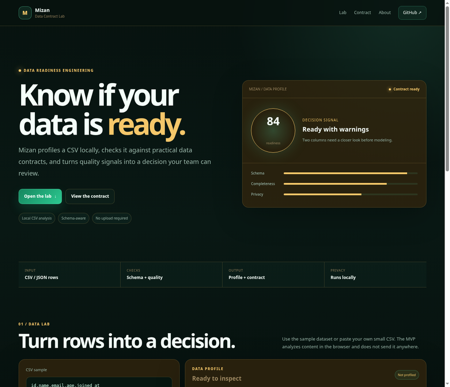
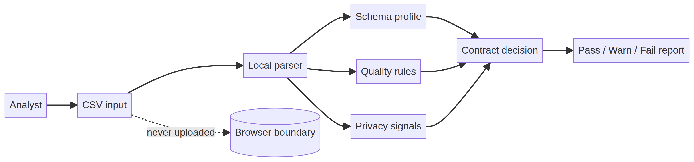

Primary user
Data analysts, AI engineers, and small teams that need a quick preflight before connecting a dataset to a larger system.
Mizan is a local-first CSV profiler and contract lab. It makes schema assumptions, quality warnings, and potential sensitive fields visible before a dataset enters an analysis or AI workflow.

A dataset can look usable while hiding missing values, duplicated rows, inconsistent formats, or fields that need privacy controls. These assumptions become expensive when they are discovered after a report, model, or agent has already been built.
Data analysts, AI engineers, and small teams that need a quick preflight before connecting a dataset to a larger system.
A contract should make the next decision explicit: pass, warn, or stop. It should not hide uncertainty behind a single readiness number.
| Capability | Implementation | Engineering intent |
|---|---|---|
| Local parser | CSV headers and rows parsed in the browser | Sample data remains inside the local session. |
| Quality signals | Missing cells, duplicate rows, basic email format | Simple checks remain reproducible and easy to audit. |
| Privacy signal | Column-name heuristic for possible personal data | Prompts a governance question without claiming classification. |
| Decision surface | Pass and warning findings with suggested actions | Moves the team from observation to ownership. |
The architecture separates parsing, profiling, quality rules, privacy signals, and the contract decision. That separation makes it possible to replace a rule without turning the UI into an opaque scoring engine.

The default fixture contains an empty name, malformed email, unknown age, invalid date shape, duplicate id, and empty joined date. Local browser testing produced **3 rows, 5 columns, 5 findings, and 3 warnings**, with the decision changing to `Review before modeling`. These are fixture observations, not customer metrics.
Boundary: Mizan is a local profiling showcase. It is not a warehouse connector, full observability platform, or guarantee that data is fit for a particular model.